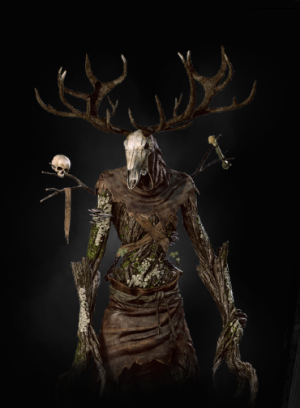

|  |
Bestiary Description:We never hunt in these woods. Never. Even if it means the whole village starves. — Mulliver, ealdorman of Hoshberg in lower Aedirn
Leshens dwell in dense, primeval woods. Fiercely territorial creatures, they hunt with stealth and cunning as their only companions. They use their inborn magic to control the plants and animals within their territory — and so when stalking them, half the battle is merely getting near enough to strike. Leshens old enough to earn the appellation "ancient" wield advanced skills and tactics that make them particularly dangerous. |